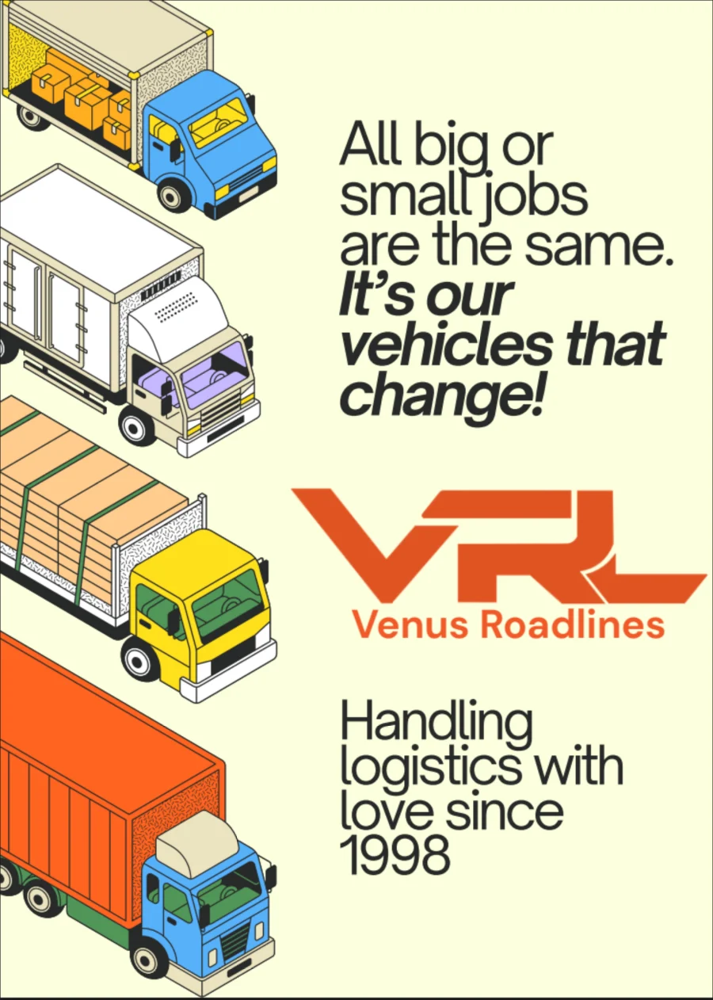

A 106-page bilingual manual, written at twenty, so a logistics company could keep a Tata Steel contract.
5 min readCo-Designer and Lead
Real work. Shipped 2021. Written for a Tata Steel contract.
Role
Co-Designer and Lead.
Brief
Never written as one. A compliance audit was coming and the Tata Steel contract was on the line.
Constraint
Decades of operational knowledge held in email chains, verbal instruction and institutional memory, and none of it written down. I was twenty.
Shipped
2021. 106 pages, bilingual.
Problem
Winning contracts it couldn't prove it deserved
Venus Roadlines had real operational knowledge, decades of it, built by people who knew exactly how a logistics company runs. But the system that demonstrated that knowledge to a client like Tata Steel didn't exist. It had never needed to before. Now it did.
The brief arrived without being written as one: the compliance audit was coming, the contract was on the line, and the documentation was scattered across email chains, verbal instructions and institutional memory. The job was to turn that into something that held up.
At the time, I was twenty.
Hypothesis
Documentation as a positioning move
If the documentation read like something a large client could genuinely use as a reference: precise, internally logical, bilingual by design rather than as an afterthought, it would do more than pass an audit. It would reframe what Venus Roadlines was: a company that took its own operations seriously enough to write them down with care.
Approach
One hundred and six pages
Rebuilt the entire Operations Manual and OH&S guidelines from scratch. The structure was designed from the reader's perspective, not the organisation's. A compliance auditor and a warehouse employee each needed to find what they needed without knowing where to look.
The bilingual decision, English and Hindi, was mine. A handbook the people meant to use it couldn't read wasn't a handbook. It was a document for the people who commissioned it, not the people it was supposed to protect.
Hindi wasn't a translation layer. It was the document working correctly.
Designed the annexure system so the manual could be updated without being rewritten. Took the process digital, removing the paper dependency that had made previous documentation fragile.
Key decisions
Three calls, and what each one cost
A manual is mostly structure, and structure is made of decisions that go invisible once they work.
Decision 01
Bilingual by design, not a translation layer
Options
English only, which is all the audit required · English with Hindi appended · bilingual by design
Why
A handbook the people meant to use it cannot read is not a handbook. It is a document for the people who commissioned it, not the people it is supposed to protect. Hindi was the document working correctly.
Trade-off
It roughly doubles the writing, and every revision has to be made twice, for ever. That cost buys a manual that works on the floor and not only in the audit.
Decision 02
Structured for the reader, not the organisation
Options
Mirror the org chart, which is how the company already thinks · structure by what a reader came to find
Why
A compliance auditor and a warehouse employee each needed to find what they needed without knowing where to look.
Trade-off
It does not match how the company describes itself internally, so the people who knew the old order had to learn where things live now.
Decision 03
An annexure system instead of one document
Options
One monolithic manual · a core document with annexures
Why
Previous documentation was fragile and paper-dependent. A manual that has to be rewritten in order to be updated stops being updated.
Trade-off
More structure to maintain, and a reader has to follow a reference to be certain they are holding the current version of a procedure.
Brand language
What the manual let them say
A company that documents itself to that standard is making a claim about how it operates, and the claim needed language. The logotype takes the L of VRL and turns it into the road and the vehicle on it, so the mark says what the company does without a line underneath it.
All big or small jobs are the same. It’s our vehicles that change.
The tagline does the positioning work the manual had just earned. A logistics company competing on fleet size cannot win that argument against a national operator; one competing on consistency can, because consistency is what a Tata Steel audit is actually testing. Handling logistics with love since 1998 sits under the mark and does the other half: it dates the company, which in this category is the credential.

The mark, the tagline and the fleet system, as delivered.Result
Three out of four, across three audits
Three external audits followed. The manual was assessed at three stars out of four; the missing star traced to an external dependency with a blocked resolution outside the team's control, not a documentation failure. The Tata Steel contract held. The manual became the operational source of truth it was designed to be.
Audit records are held on the company's system.
Learning
Writing is infrastructure when the stakes are high enough
The work that matters most in a business is often the work nobody sees until it isn't there. A 106-page bilingual compliance manual is not a portfolio piece in the traditional sense. It doesn't look like brand work, it doesn't photograph well, and it takes longer to explain than a campaign visual. But it is the reason a contract worth more than the manual itself stayed in place. That's a different kind of proof.
The bilingual call was right and it was also undervalued by almost everyone who reviewed the project. Accessibility is a strategic decision as much as a design one. When the people who needed the document couldn't read it, the document didn't exist for them. Making it work for everyone who needed it wasn't extra. It was the minimum.